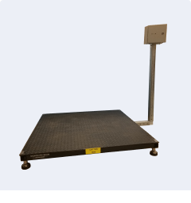

<section class="section capabilities bg-white">
    <div class="container">
        <div class="capabilities-wrap">
            <div class="capabilities-desc">
                <div class="label-section" data-aos="fade-up">Monitoring Solutions</div>
                <div class="capabilities-media" data-aos="fade-up">
                    <picture>
                        <source srcset="../../img/home/capabilities-img.png" type="image/png">
                        <source srcset="../../img/home/capabilities-img.webp" type="image/webp">
                        
                    </picture>
                </div>
            </div>
            <div class="capabilities-info">
                <div class="title-section" data-aos="fade-up">
                    <h2>Advanced Remote Monitoring Solutions for Smart Inventory Management</h2>
                </div>
                <div class="text-section" data-aos="fade-up">
                    <strong>Our previous designs include remote monitoring devices that automatically measures the amount of liquid in sealed tanks 24 hours a day and calls a host computer to report the status of the tank contents.</strong>
                    <p>These Smart Inventory Management Systems link to the user's phone line allowing for ease of access and is the only external connection the management system needs. In addition, calling times can be selected by the user which will minimize phone line interruptions.</p>
                    <p>Our engineers take the greatest care to incorporate the most advanced technology when designing our smart sensors. </p>
                </div>
            </div>
        </div>
    </div>
</section>
